Grundstück
11,4 ha
Flur 4, Flurstück 661, Poppelsdorf — inklusive der zugehörigen Landflächen.
Entwicklung eines gemeinwohlorientierten Zentrums
Ein denkmalgeschütztes Hofensemble von 1845 steht seit 2016 leer. Die Bachelorarbeit fragt, wie der Ort wieder für die Öffentlichkeit zugänglich werden kann — gemeinsam mit den Menschen, die ihn tragen.
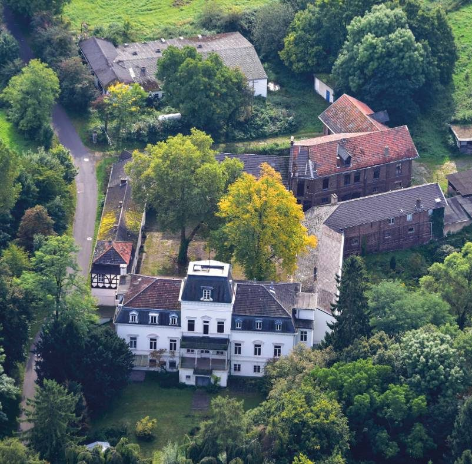
In vielen Städten Deutschlands stehen hunderttausende nutzbare Gebäude leer, während gleichzeitig jährlich über 12.000 Gebäude abgerissen und rund 100.000 neu gebaut werden. Ungenutzte Gebäude verlieren ihre gesellschaftlichen Funktionen. Wo zuvor Begegnung, Arbeit und Lernen stattfanden, entsteht Leere — räumlich wie sozial.
Gerade denkmalgeschützte Ensembles besitzen jedoch ein Potenzial, das sich nicht reproduzieren lässt. Sie können wieder Teil des gemeinschaftlichen Lebens werden und neue Formen des Zusammenkommens ermöglichen. Jedes leerstehende Gebäude, das einer neuen Nutzung zugeführt wird, erhält die Chance auf ein neues Leben.
Der um 1845 errichtete Gutshof liegt landschaftlich idyllisch im Außenbereich zwischen Poppelsdorf und Ippendorf. Bis 2016 wurde das Anwesen von der Universität Bonn genutzt. Seitdem stehen die Gebäude leer, die landwirtschaftlichen Flächen werden kaum genutzt und der Zustand der Gebäude ist durch zunehmenden Vandalismus fragil.
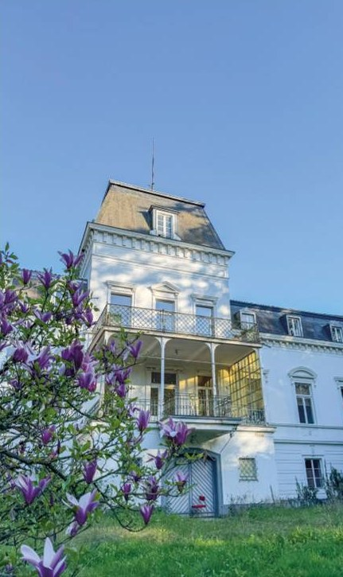
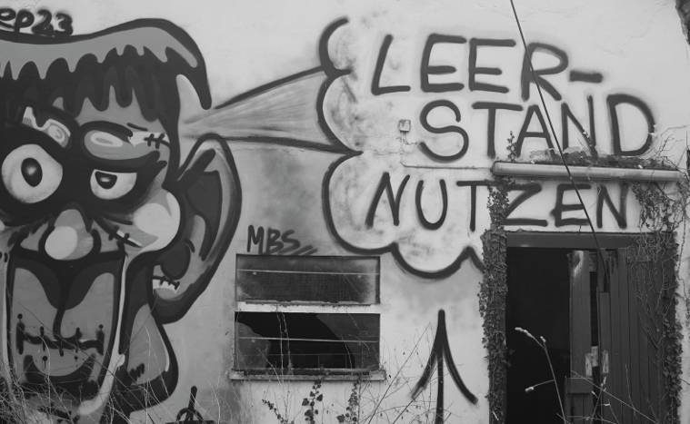
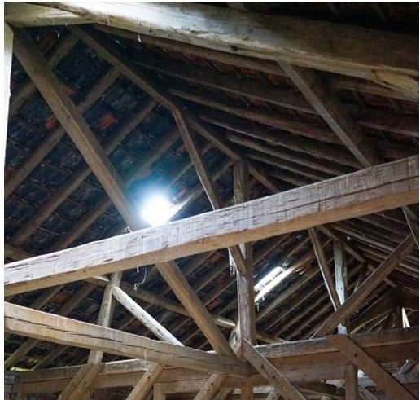
Der Standort liegt in einem Landschaftsschutzgebiet und grenzt unmittelbar an ein Naturschutzgebiet. Die Lage am Übergang zwischen Stadt und Landschaft prägt den Ort maßgeblich.
Flur 4, Flurstück 661, Poppelsdorf — inklusive der zugehörigen Landflächen.
Jeweils rund acht Minuten fußläufig. Linien 600–603, 632, 634, Nachtbusse.
Eingebunden in das Wander- und Wegenetz des Melbtals. Parken 10 Minuten entfernt.
Im Landschaftsschutzgebiet, direkt angrenzend an ein Naturschutzgebiet.
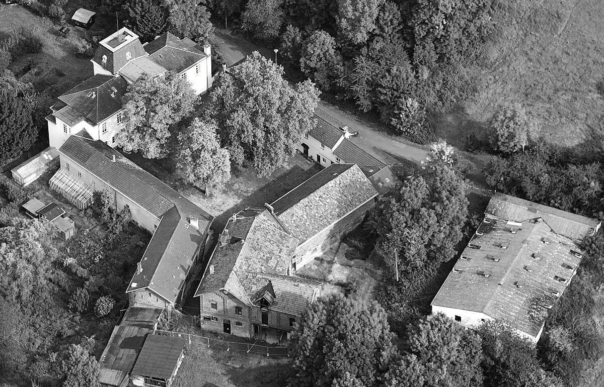
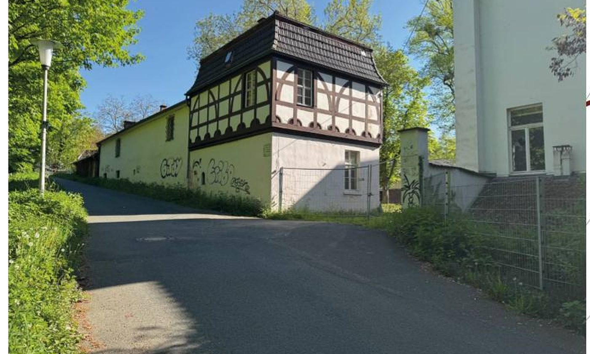
Über 200 Jahre haben sich Schichten übereinandergelegt. Gerade diese Überlagerung eröffnet ein vielfältiges räumliches Repertoire.
Jedes Gebäude wurde einzeln erfasst: Kennwerte, Stärken, Herausforderungen. Was der Bestand hergibt, entscheidet über den Eingriff.
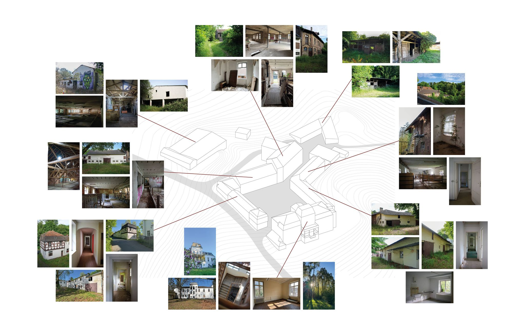
Bestandsanalyse: Axonometrie mit verorteten Bestandsfotos. Auf schmalen Bildschirmen seitlich scrollbar.
NRF 882 m² · BGF 1.056 m²
Substanz in verhältnismäßig gutem Zustand, großzügige Raumhöhen auf allen Geschossen, gute Belichtung, schöne Aussicht. Herausforderung: kleine Fenster mit hohen Brüstungen im Dachgeschoss.
NRF 738 m² · BGF 855 m²
Sehr hohe Geschosshöhen, große zusammenhängende Räume, sehr gute Belichtung über alle Geschosse. Herausforderung: marode Holzkonstruktionen, statische Ertüchtigung nötig.
NRF 576 m² · BGF 628 m²
Direkte Anbindung zum Innenhof, Dachboden mit sehr großer Geschosshöhe, große Toröffnung zentral zum Hof. Herausforderung: schlechte Belichtung, teils keine Fenster.
NRF 512 m² · BGF 553 m²
Große stützenfreie Räume, direkte Anbindung an die Straße. Herausforderung: unebener Bodenaufbau, geringe Geschosshöhe, maroder Dachstuhl.
NRF 328 m² · BGF 380 m²
Substanz in gutem Zustand, gute Belichtung im Erdgeschoss, direkte Anbindung zum Innenhof. Herausforderung: niedrige Raumhöhen im Dachgeschoss.
NRF 321 m² · BGF 365 m²
Eigenständiges Treppenhaus zum Obergeschoss, privater Bereich getrennt vom Innenhof, Sichtmauerwerk innen und außen.
NRF 286 m² · BGF 314 m²
Langer stützenfreier Raum im Erdgeschoss, Obergeschoss mit großem Potenzial für Wohnraum. Herausforderung: geringe Gebäudetiefe.
NRF 286 m² · BGF 346 m²
Gute Raumhöhen im Erdgeschoss, viele Zimmer, gute Wohnraumstruktur. Herausforderung: langer fensterarmer Flur im Obergeschoss.
Nutzfläche über sieben Gebäude, verteilt um einen gemeinsamen Innenhof.
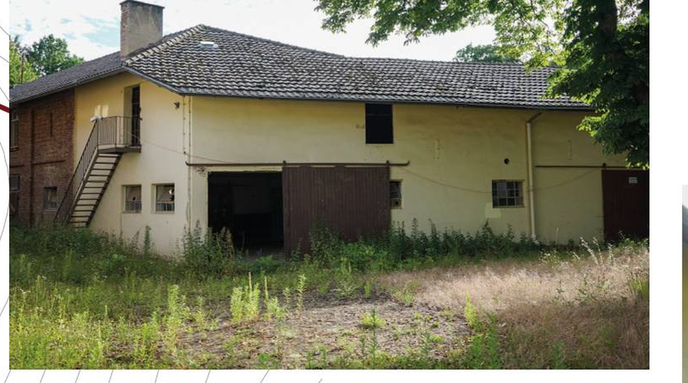
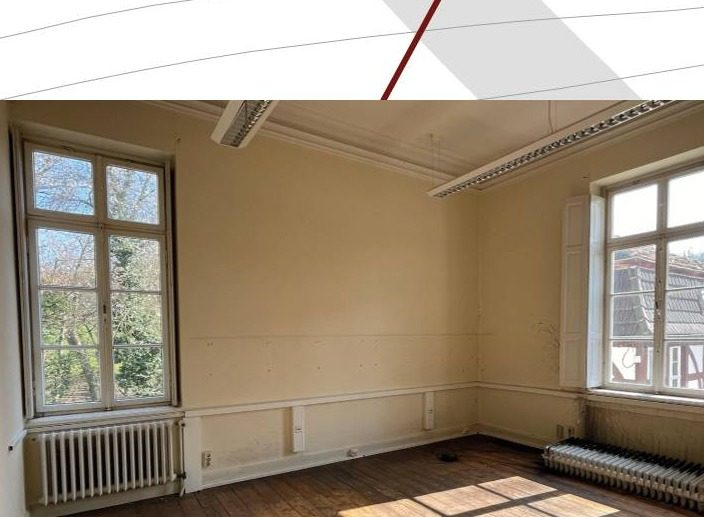
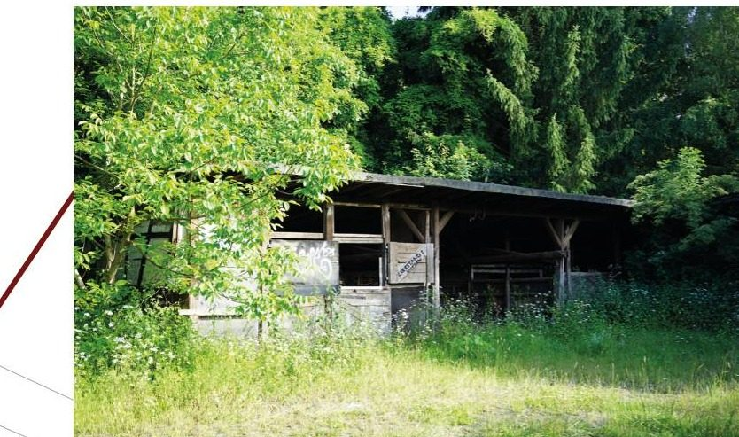
Ein Ort, der Gemeinschaft fördern soll, kann nur gemeinsam mit den Menschen entwickelt werden, die ihn später nutzen, gestalten und mit Leben füllen. Der Entwurf entstand deshalb nicht am Zeichentisch allein, sondern über drei Zugänge: einen partizipativen Workshop mit der Gut Melb Initiative, einen ganzen Tag vor Ort und eine Umfrage unter Anwohnenden und Bonner Bürgerinnen und Bürgern.
Architektur ist ein soziales Handeln — sozial sowohl in Methode als auch Ziel. Sie ist das Ergebnis von Teamarbeit und dient Gruppen von Menschen zur Nutzung.
Spiro Kostof, 1995
Acht Mitglieder der Initiative, 11:00 bis 16:30 Uhr, an der Hochschule. Vormittags theoretischer Teil zum Konzeptpapier der Initiative, nachmittags räumliche Arbeit am Arbeitsmodell 1:100.
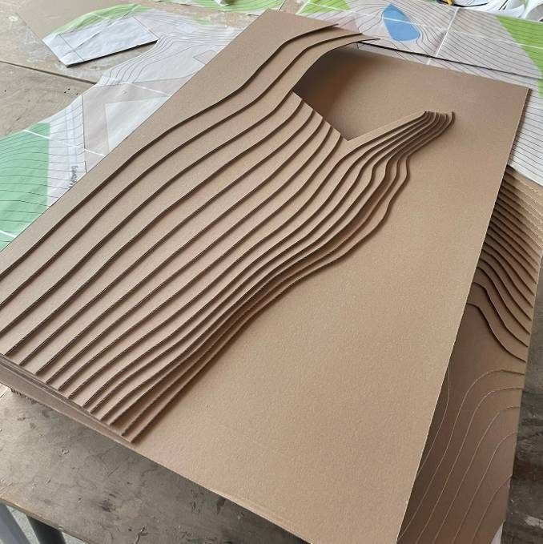
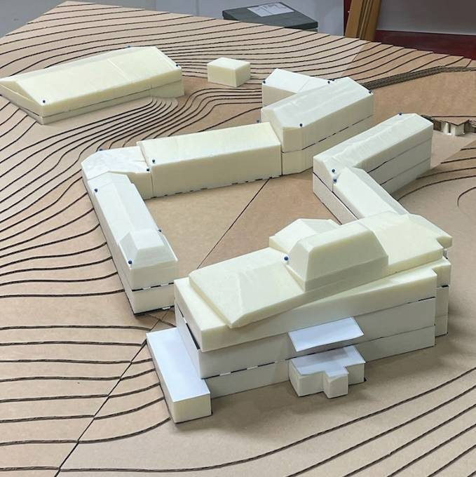
Pinke Fähnchen ordnen mögliche Nutzungen den einzelnen Gebäuden und Bereichen zu. Jede Person startet mit zwei Fähnchen — schnell wurden es mehr.
Gelbe Fähnchen für das, was sich kurzfristig und mit überschaubaren Mitteln umsetzen lässt.
Ein gelber Punkt für Notwendiges, ein roter für persönliche Herzenswünsche. Gastronomie und Seminare erhielten die meisten Stimmen.
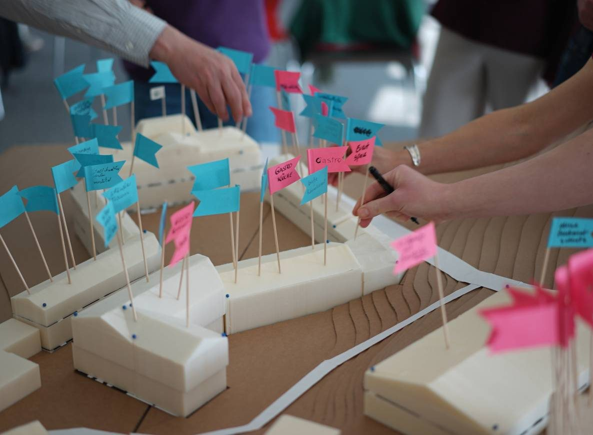
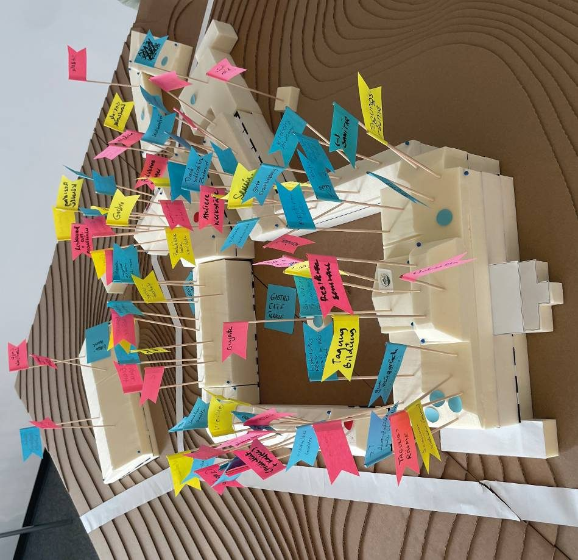
Ein Tisch aus dem Atelier, Klappstühle, Kreide auf der Straße. Von 11:00 bis 16:40 Uhr im Gespräch mit Anwohnerinnen, Anwohnern und Passanten.
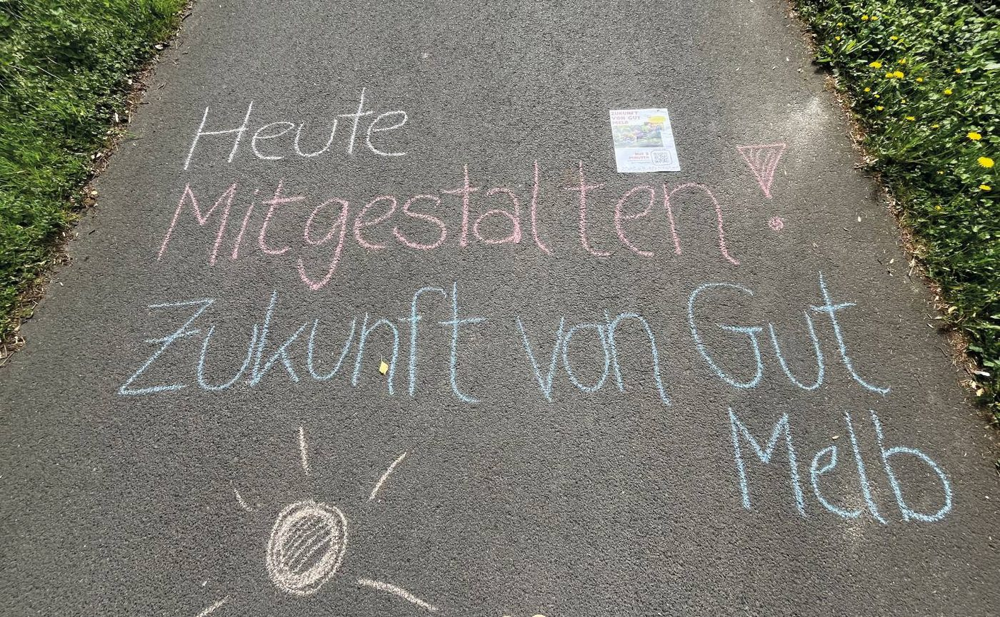
Frage: „Welche Nutzungen könnten Sie sich an diesem Ort vorstellen?“ Mehrfachnennung möglich. Erhebung per Flyer und Aushang mit QR-Code.
Dass es nicht verfällt und man sich an der Schönheit der Gebäude erfreuen kann.
Aus der Bürgerumfrage
Es braucht Menschen vor Ort, die den Hof nutzen, beleben und sich um ihn kümmern. Gerade mit Blick auf den Vandalismus ist das essenziell.
Sie machen Gut Melb wieder sichtbar, zugänglich und nutzbar — und erlauben, den Ort zu erproben, bevor große Investitionen fallen.
Kein einzelnes Angebot kann den Hof tragen. Erst das Zusammenspiel unterschiedlicher Nutzungen macht ihn lebendig und langfristig tragfähig.
Eine offene und wertschätzende Kommunikation ist notwendig, um eine gute Gruppendynamik zu gewährleisten und sich gegenseitig zu inspirieren.
Einander zuhören und wertschätzen. Die Meinung anderer akzeptieren und offen entgegentreten. Gemeinsam Ideen entwickeln steht im Vordergrund.
Ideen der Mitmenschen annehmen, kritisch hinterfragen und so zur bestmöglichen Entscheidung kommen.
Gut Melb wird nicht als abgeschlossenes Projekt gedacht, sondern phasenweise entwickelt und erprobt.
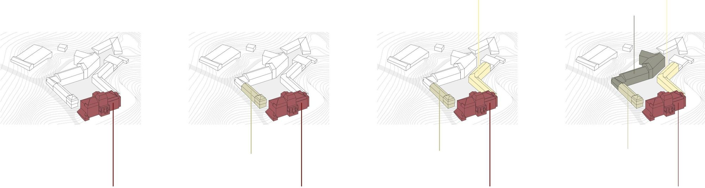
Prozesshafte Entwicklung in vier Phasen.
Bewohnerinnen und Bewohner, Besuchende, Künstlerinnen und Künstler, Nachbarschaft, Initiative und Tierhaltende prägen den Hof auf ihre jeweils eigene Weise. Ein Rahmen, der Nutzungen verbindet statt sie festzuschreiben.
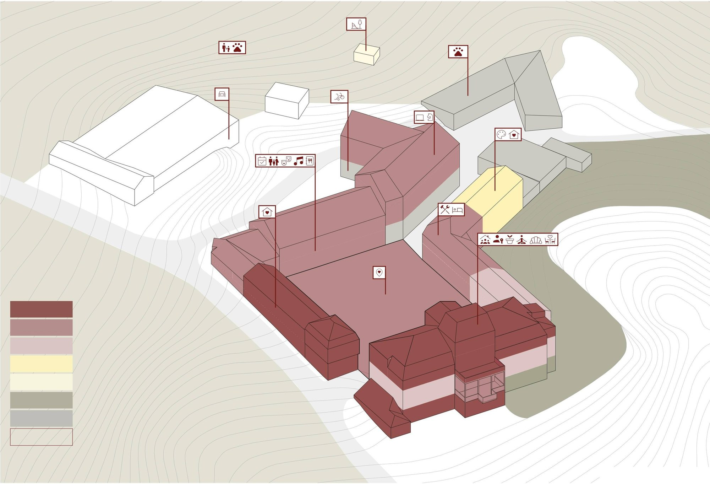
Nutzungsvision: Verortung der Nutzungen im Ensemble.
Der Entwurf versteht sich nicht als fertiges Ergebnis, sondern als möglicher Ansatz und als Impuls für den zukünftigen Umgang mit dem Bestand und die Weiterentwicklung des Gutshofes. Er zeigt, wie Gut Melb wieder für die Öffentlichkeit zugänglich werden kann — schrittweise, wirtschaftlich tragfähig und getragen von den Menschen vor Ort.
Abbildungen und Inhalte aus der Bachelorarbeit „Gut Melb — Entwicklung eines gemeinwohlorientierten Zentrums“ von Nicolai Max Schwarz, Lena Teresa Stadtfeld und Luis Valentin Bongardt, Alanus Hochschule für Kunst und Gesellschaft, 2026.
Zitat: Kostof, S. (1995), S. 7. Umfrageergebnisse aus der im Rahmen der Arbeit durchgeführten Bürgerbefragung.